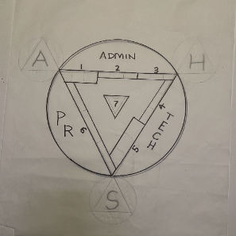
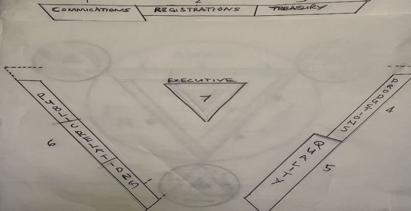

Table of Contents
- Executive Summary
- Mission, Vision & Values
- Market Analysis
- Organizational Structure
- Services & Offerings
- 7-Step Operational Process
- Revenue Model
- Financial Projections
- Spreadsheet Addendum
- Marketing & Growth Strategy
- Technology Platform
- Legal & Regulatory Compliance
- Risk Analysis & Mitigation
- Implementation Roadmap
- Appendix
1. Executive Summary
ASH International, Inc. (Ashes Soaring High) is a proposed 501(c)(3) nonprofit organization that provides aviation-based ash dispersal memorial services. We transform the final farewell into an extraordinary, breathtaking experience — through skydiving formations, helicopter ceremonies, hot air balloon releases, hang gliding, paragliding, and international destination expeditions.
The Problem: Cremation has become the preferred end-of-life choice in America, with a 63.4% cremation rate in 2025 (NFDA), projected to reach 82.3% by 2045. Yet 37.1% of cremated remains end up sitting in an urn on a shelf — families struggle to find meaningful, accessible ways to honor their loved ones. The ash-scattering market is fragmented, unprofessional, and lacks a national or international platform.
The Solution: ASH provides a comprehensive, technology-enabled platform that connects families with a professionally trained Guild of skydivers, pilots, and aviators who conduct beautiful, safe, and legally compliant ash dispersal ceremonies. From local balloon releases to international expeditions over Easter Island, ASH makes aviation memorials accessible, affordable (through cost-sharing), and deeply meaningful.
Key Differentiators
The ASH Isosceles Triangle — vertex-down, A top-left, H top-right, S bottom
- 501(c)(3) Nonprofit Status: Mission-driven, donor-supported, tax-deductible contributions.
- The ASH Guild: A certified network of skydivers (wingsuit, freefly, belly, angle, BASE) and pilots trained on proprietary dispersal systems.
- Documemorial™: Professional documentary + memorial film production with 7-channel social media broadcast and global live streaming.
- Proprietary Dispersal Vessel: Handcrafted, personalized containers that become family keepsakes after the ceremony.
- Technology Platform: App-based wish registration, ceremony scheduling, live streaming, and digital memorial pages.
- Cost-Sharing Events: Shared ceremonies that dramatically reduce individual family costs.
- Three-Pillar Model (A-S-H): App, Special Events, and Hero (Guild) — each a semi-autonomous organization with dedicated leadership.
- International Reach: Destination ceremonies worldwide — Easter Island, Machu Picchu, Galápagos, and any meaningful location on Earth.
Target Market Segments
- Ashes on a Shelf: Families with cremated remains currently in urns at home, seeking a more meaningful option.
- Pre-Planning (End of Life): Individuals approaching end of life who want to arrange their own aviation farewell.
- Future Wishers: Healthy individuals recording long-term cremation and dispersal preferences in the ASH app.
- Pet Memorials: The $23B+ U.S. pet memorial market — beloved companions deserve extraordinary farewells too.
- High-Net-Worth / Celebrity: Special Events division serving HNW individuals, celebrities, corporations (NFL, NBA, Fortune 500).
2. Mission, Vision & Values
Mission
To honor every life with an extraordinary aviation-based farewell — transforming the act of ash scattering into a breathtaking, spiritual celebration that connects families and communities worldwide.
Vision
To become the world's premier organization for aviation memorial services — the first name families think of when they envision a farewell that soars. By 2035, ASH will serve 10,000+ ceremonies annually across 50+ countries.
Core Values
- Reverence: Every ceremony is sacred. We treat each life with the dignity, respect, and artistry it deserves.
- Safety: No ceremony proceeds without absolute safety compliance. Our Guild adheres to the highest aviation and skydiving standards.
- Accessibility: Through cost-sharing, sponsorships, and sliding-scale pricing, no family is turned away for financial reasons.
- Innovation: From proprietary dispersal devices to live-streaming Documemorials, we continuously push the boundaries of what's possible.
- Community: We build a global network of families, skydivers, pilots, volunteers, sponsors, and affiliates united by a common mission.
- Transparency: As a 501(c)(3), we hold ourselves to the highest standards of financial transparency and governance.
The Owl Motif
The owl — a symbol of wisdom, guardianship, and spiritual transition across nearly every culture — serves as ASH's central motif. The owl's triangular face represents the three pillars of the organization:
The Owl: IT (left eyebrow), IP (right eyebrow), Affiliates (chin below S)
- A (Top Left): The App & Digital Platform
- H (Top Right): The Hero (Guild) Operations
- S (Bottom): Special Events (Premium Experiences)
The owl's eyebrows represent IT (left) and IP (right) — the technology and intellectual property functions. The chin below the S vertex represents Affiliates Management. As ASH grows, the owl motif evolves — adding talons, wings (patrons/sponsors), and a full body — reflecting the organization's maturation.
The Three Pillars (A-S-H)
The same structure shown on the public ASH website is also the core operating model in this business plan: three interconnected pillars that each own a distinct mandate while reinforcing the others.
ASH Three Pillars model used across brand, operations, and service delivery
App & Platform
Digital foundation for planning, coordination, storytelling, and family access.
- Final wishes registry and planning workflow
- Ceremony scheduling and secure family portal
- Live stream and Documemorial hosting
Special Events
Premium domestic and international ceremonies for high-touch, bespoke experiences.
- Destination and expedition-based memorial releases
- VIP concierge planning and family travel coordination
- Corporate, celebrity, and legacy-centered events
Hero (Guild)
Operational backbone that recruits, trains, certifies, and deploys aviation talent.
- Guild standards, onboarding, and safety governance
- Logistics, route planning, and ceremony operations
- Dispersal equipment stewardship and QA
3. Market Analysis
Industry Overview
The U.S. funeral services industry generates $20.6 billion annually ($16.3B funeral homes + $4.3B crematories/cemeteries), employing over 105,000 people across 15,400+ funeral homes (NFDA, 2025). Cremation has overtaken burial as the dominant choice, fundamentally reshaping the industry.
| Metric | Value | Source |
|---|---|---|
| U.S. Cremation Rate (2025) | 63.4% | NFDA 2025 Cremation & Burial Report |
| U.S. Burial Rate (2025) | 31.6% | NFDA 2025 |
| Projected Cremation Rate (2045) | 82.3% | NFDA 20-year projection |
| Prefer Scattering in Sentimental Place | 33.5% | NFDA Consumer Survey |
| Prefer Ashes Kept in Urn at Home | 37.1% | NFDA Consumer Survey |
| Interested in Green Funeral Options | 61.4% | NFDA 2025 Consumer Report |
| Attended Non-Traditional Funeral | 58.3% | NFDA 2025 Consumer Report |
| U.S. Deaths per Year | ~3.3 million | CDC |
| Estimated Annual Cremations | ~2.1 million | 63.4% × 3.3M |
| U.S. Pet Memorial Market | $23B+/year | Industry estimates |
| Average Funeral Cost (with cremation) | $6,280 | NFDA 2023 Price Study |
| Average Funeral Cost (with burial) | $8,300 | NFDA 2023 Price Study |
Serviceable Addressable Market (SAM)
Of the ~2.1 million annual U.S. cremations:
- 33.5% prefer scattering → ~700,000 families/year seeking scattering options
- 37.1% keep ashes in an urn → ~780,000 households with ashes "on a shelf" (cumulative millions)
- Even capturing 0.1% of the annual scattering market = 700 ceremonies/year
- At an average ceremony value of $5,000, that represents $3.5M in annual revenue
Competitive Landscape
The aerial ash scattering market is highly fragmented with no dominant national player:
- Local charter services: Small airplane or helicopter companies offering basic flyover scattering. No branding, no Documemorial, no emotional design.
- Eternal Ascent Society: Balloon-based ash releases. Regional, limited service options.
- Various skydiving centers: Occasional one-off ash jumps, no standardized process, no Guild certification.
- DIY approaches: Families attempting their own scattering, often unsure of legality or logistics.
ASH's competitive advantage: No existing organization offers a comprehensive, branded, technology-enabled, multi-modality platform with a certified Guild, Documemorial production, proprietary dispersal devices, international expedition capability, and 501(c)(3) nonprofit status — all in one place.
Social Media & Viral Potential
Aviation ash-scattering videos regularly achieve millions of views on YouTube, TikTok, and Instagram. The visual drama of skydivers forming shapes, balloons ascending at sunset, and ashes catching the wind creates inherently shareable, emotionally powerful content. This organic viral potential is a core growth engine for ASH — every Documemorial is a marketing asset.
4. Organizational Structure
The Owl Framework
ASH operates as a parent organization with three flagship pillars (A-H-S) embedded inside a broader 7-division Reactor model. Each division has accountable leadership and reports through the ASH Executive Director structure. The Owl Framework illustrates the core geometry:
Complete Owl Framework — Divisions, support functions, and growth elements
| Element | Division | Function | Leader |
|---|---|---|---|
| A (Top Left) | App & Platform | Digital platform, wish registry, scheduling, live streaming, Documemorial hosting | Director of Technology |
| H (Top Right) | Hero (Guild) | Guild recruitment/training, operations, logistics, dispersal device management | Director of Operations |
| S (Bottom) | Special Events | Premium/international ceremonies, HNW clients, celebrity events, expeditions | Director of Special Events |
| IT (Left Eyebrow) | Information Technology | Infrastructure, security, platform development | Reports to Director of Technology |
| IP (Right Eyebrow) | Intellectual Property | Patents (dispersal device), trademarks, brand protection | Legal Counsel |
| Chin (Below S) | Affiliates | Cremation cos., hospices, funeral homes, angel flight orgs, estate planners | Director of Partnerships |
| Wings | Patrons & Sponsors | Individual donors, corporate sponsors, founding partners | Director of Development |
| ASH (Triangle) | Parent Organization | Strategy, governance, 501(c)(3) compliance, board management | Executive Director / CEO |
Inter-Division Relationships (Lune Model)
Each division's triangle is inscribed within a circle. The two "lunes" (crescent-shaped areas between the triangle and circle) represent the other two divisions. This ensures every division inherently connects to and serves the other two:
Lune Model — Each division's circle overlaps, creating shared crescent zones of collaboration
- A Division: Driven by App/Tech. Lunes: S (Special Events) and H (Hero (Guild)).
- H Division: Driven by Operations/Guild. Lunes: A (App) and S (Special Events).
- S Division: Driven by Special Events. Lunes: A (App) and H (Hero (Guild)).
The driver division is always the upper lune in its circumscribed circle, ensuring clarity of ownership while maintaining interconnection.
Board of Directors
As a 501(c)(3), ASH will be governed by a Board of Directors with the following composition:
- Executive Director (ex-officio)
- 3 Division Directors (ex-officio, non-voting)
- 3-5 Independent Board Members (aviation, nonprofit, finance, legal, marketing expertise)
- 1-2 Family Representatives (past ceremony participants)
- 1 Major Donor Representative
Staffing Model
ASH operates on a bootstrap volunteer model initially, transitioning to paid positions as revenue grows:
- Phase 1 (Year 1): All-volunteer executive team + Guild. Stipends for ceremony operations.
- Phase 2 (Year 2-3): Paid Executive Director, 2-3 part-time staff, Guild members compensated per-ceremony.
- Phase 3 (Year 4+): Full organizational chart with salaried leadership, regional chapter coordinators, and full-time Documemorial production team.
The ASH Reactor
The Reactor is ASH's self-replicating organizational engine — 7 divisions, each containing 3 departments, for 21 departments total — arranged as a triangle within a triangle within a triangle. Every division mirrors the structure of the whole, and every part contains the blueprint to reproduce the entire organization.
The Fractal Principle: Just as the ASH triangle (A-S-H) defines the parent organization, each division is itself a triangle of 3 departments. Scale any single division outward and it becomes a complete ASH in miniature — capable of autonomous operation while remaining part of the whole. This is the reactor: self-similar at every level, infinitely scalable.
The ASH Reactor — 7 Divisions × 3 Departments = 21 departments. The triangle within the triangle within the triangle.


Original reactor sketches by Bill Liebhart — the 7-division, 21-department self-replicating model
The 7 Divisions
| # | Division | Side | Departments (×3) | Function |
|---|---|---|---|---|
| 1 | Communications | Top | Dept 1: Recognition Dept 2: Communications Dept 3: Perception |
Routing & Personnel, Communications & Office, Inspections & Reports |
| 2 | Registrations | Top | Dept 4: Orientation Dept 5: Understanding Dept 6: Enlightenment |
Promo & Marketing, Publications & ASH Events Planning, Office of Registrar |
| 3 | Treasury | Top | Dept 7: Energy Dept 8: Adjustment Dept 9: Body |
Income, Disbursements, Records Assets & Materials |
| 4 | Productions | Right | Dept 10: Prediction Dept 11: Activity Dept 12: Production |
Guild Production Services, Guild Technical Development, Guild Technical Execution |
| 5 | Quality | Right | Dept 13: Result Dept 14: Correction Dept 15: Ability |
Guild Examinations for Quality, Review of Safety, Guild Certifications |
| 6 | Public Relations | Left | Dept 16: Acceptability Dept 17: Participation Dept 18: Control |
Public Information, Public Services, Success! |
| 7 | Executive | Center | Dept 19: Conditions Dept 20: Existence Dept 21: Source |
Office of Executive Director, Office of Corporate Affairs, Office of the Founder |
Self-Replication: How the Reactor Scales
The reactor's power is in its fractal geometry. When ASH opens a new regional chapter or international affiliate, the chapter doesn't need to invent its own structure — it simply instantiates the same 7-division, 21-department triangle. The triangle is the instruction set.
- Level 1 — National: ASH headquarters operates the full 7×3 reactor.
- Level 2 — Regional: Each regional chapter mirrors the reactor with localized departments scaled to demand.
- Level 3 — Affiliate: International partners adopt the reactor framework, adapting departments to local regulations and culture while preserving structural integrity.
This is the triangle within the triangle within the triangle: the organizational DNA that makes ASH infinitely reproducible without loss of identity or mission coherence.
5. Services & Offerings
Core Ceremony Types
Services mapped to their managing division
| Service | Description | Price Range | Division |
|---|---|---|---|
| Skydiving Formation | Guild skydivers form owl/custom shapes at 10,000-15,000ft, ashes released during formation | $5,000 – $15,000 | H (Guild) |
| Helicopter Ceremony | Private helicopter flight over chosen landscape, family on board | $3,500 – $8,000 | H (Guild) |
| Hot Air Balloon | Sunrise/sunset balloon flight, ashes released from basket | $2,500 – $5,000 | H (Guild) |
| Airplane Flyover | Fixed-wing scattering over meaningful terrain | $2,000 – $4,000 | H (Guild) |
| Paraglider / Hang Glider | Tandem flight with ashes, intimate and personal | $2,500 – $5,000 | H (Guild) |
| BASE Jump Tribute | Ashes released from iconic cliffs/structures during BASE jump | $5,000 – $10,000 | H (Guild) |
| International Expedition | Multi-day destination ceremony (Easter Island, Machu Picchu, etc.) | $15,000 – $100,000+ | S (Special) |
| Celebrity / Corporate | Large-scale, high-profile memorial events | $50,000 – $500,000+ | S (Special) |
| Pet Memorial | All modalities available for beloved pets | $1,500 – $10,000 | H/S |
The Documemorial™
Every ceremony includes or can add the Documemorial package:
- Pre-ceremony documentary: Professional interviews, family footage, life story compilation (10-20 min film)
- Live stream production: Multi-camera live broadcast across 7 social media platforms
- Aerial videography: 4K drone and helmet-cam footage of the dispersal
- Post-production edit: Polished memorial film delivered within 2-4 weeks
- Permanent digital memorial page: Hosted on ASH platform with sharing capabilities
The Dispersal Vessel
- Proprietary, patent-pending design engineered for reliable in-flight release
- Crafted from premium materials (rare woods, artisan metals, crystalline stone, or family-meaningful materials)
- Engraved with GPS coordinates, date, formation flown, and personal inscription
- Aerodynamically compatible with all flight platforms (skydive, balloon, helicopter, etc.)
- Returned to family as a permanent memento after ceremony
- Optional: matching miniature vessels for extended family members
Cost-Sharing Events
A key innovation: when a high-value ceremony is scheduled (e.g., a celebrity's international expedition), ASH opens additional spots for other families to participate, dramatically reducing per-family costs. This creates a community experience while making premium ceremonies accessible.
The Documemorial™ — Documentary + Memorial
The Documemorial is a professionally produced short documentary that weaves together the story of the person being honored — their passions, accomplishments, relationships, and the places that mattered most to them. Combined with full live-stream coverage of the ash dispersal ceremony, the Documemorial creates a rich, participatory experience that connects loved ones around the world in real time.
Afterwards, families receive:
- High-quality edited memorial film (typically 15-25 minutes)
- Permanent digital memorial page accessible to family and friends forever
- The ceremonial dispersal vessel as a tangible keepsake
- Multi-platform broadcast archive across all social channels
Seven Channels of Connection
Every ceremony is broadcast and archived across multiple platforms to maximize reach and participation:
- Live Stream: Direct broadcast to families unable to attend in person
- YouTube: Permanent archive for long-term sharing and remembrance
- Instagram: Real-time stories and behind-the-scenes ceremony moments
- Facebook: Family group integration and intergenerational sharing
- X / Twitter: Public awareness and media amplification
- TikTok: Reaching younger demographics with short, powerful moments
- LinkedIn: Professional networks and corporate memorial tributes
The Dispersal Vessel — Engineered Keepsake
The ASH dispersal vessel is the physical heart of each ceremony. It is a handcrafted, precision-engineered container that serves a dual purpose: safely releasing the ashes at altitude in a beautiful and controlled manner, then being returned to the family as a cherished memento.
Design & Customization
- Materials: Rare woods, crystalline stone, artisan metals, or custom materials chosen by the family for personal significance
- Mechanism: Patent-pending dispersal system engineered for reliable, precise release at any altitude
- Engraving: GPS coordinates of release, date, formation type, and personalized inscription
- Compatibility: Aerodynamic design works seamlessly with skydiving, helicopter, balloon, hang gliding, and fixed-wing platforms
- Keepsake Option: Optional matching miniature vessels for family members to hold during the ceremony
The ASH Guild — Elite Network of Aviators
The ASH Guild is a professionally trained, certified network of skydivers, pilots, balloonists, and aviators united by a sacred mission: to conduct beautiful, safe, and meaningful ash dispersal ceremonies. Guild membership is rigorous and selective, with specific certifications and experience requirements for each discipline.
Guild Membership Disciplines & Requirements
Skydiving Formation: USPA B-license minimum (C or D preferred), 200+ jumps, formation flying experience, ASH dispersal certification
Helicopter Operations: Current FAA commercial pilot license, 500+ hours PIC, current medical, ASH mission protocol training
Fixed-Wing Aircraft: FAA commercial or private pilot, 500+ hours PIC, current medical, ASH dispersal procedures
Hot Air Balloon: FAA lighter-than-air certificate, commercial balloon pilot license, 200+ flight hours, passenger-family protocol training
Hang Gliding & Paragliding: USHPA Advanced (P4/H4) rating, tandem instructor certification, 300+ flight hours, insurance and site approvals
BASE Jumping: 500+ BASE jumps, wingsuit experience preferred, consistent safety record, ASH risk management training
Dispersal Certification Program
All Guild members complete the proprietary ASH Dispersal Device Training — a rigorous 2-day intensive covering device operation, formation protocols, ceremonial procedures, family interaction, weather decision-making, and emergency protocols. Recertification required annually.
Affiliate & Partnership Network (The "Chin")
ASH's growth depends on a trusted network of partners who connect families to us at their moment of greatest need. These affiliate relationships form the "chin" of the owl — the stable foundation that supports the whole.
Key Affiliate Categories
Cremation Companies (100+): Direct referral partnerships with independent and chain crematories nationwide. Families learn about ASH immediately after choosing cremation.
Hospice Organizations (30,000+): End-of-life care providers actively discuss dispersal options with families during planning conversations.
Estate Planners & Death Benefits: Integration with estate planners, life insurance brokers, and death benefit administrators who market memorial options.
Funeral Homes (15,400+ U.S.): Funeral directors as referral partners and co-service providers, expanding ASH reach through their existing family relationships.
Angel Flight Network: Volunteer pilot organizations providing transport logistics and potential ceremony coordination.
Digital Last Wishes Platforms: Integration with online services where families record final preferences — automatically including ASH dispersal options.
International Partners: Licensed operators in key destination markets (Easter Island, Galápagos, Machu Picchu, European Alpine regions) for international expeditions.
6. Commitment to Continuous Improvement
Separate from the organizational structure of the Reactor's 7 divisions, ASH applies a rigorous 7-Step Continuous Improvement Process as its quality and operations methodology. This process governs how each division — and ASH as a whole — identifies problems, takes action, and ensures ongoing excellence in everything from ceremony execution to family experience to financial stewardship.
The 7 steps are mapped to the edges of the ASH triangle as a visual reminder that improvement is not a destination — it is a permanent loop:
Awareness → Hypothesis → Sustain → loop. The ASH improvement cycle.
A — Awareness (Steps 1–3: Define, Uncover, Measure)
The loop begins here. A problem or opportunity is recognized, scoped, and quantified.
H — Hypothesis (Steps 4–5: Analyze, Act)
Data becomes insight. Root causes are identified and solutions are tested and implemented.
S — Sustain (Steps 6–7: Control, Monitor)
Improvements are locked in. Performance is tracked and defended against regression.
Then the loop restarts at Awareness — continuously, at every level of the organization, forever.
Note: This 7-step process is distinct from the 7 organizational divisions of the Reactor. The divisions define who we are. The 7-step loop defines how we get better.
Step 1: Define the Process
Map suppliers, inputs, activities, outputs, customers, and boundaries to clearly identify the process scope. For each division, this means documenting every touchpoint from initial family contact through ceremony execution to post-event follow-up.
Step 2: Uncover Opportunities
Spot 50-75 improvement areas or problems during mapping, focusing on user-reported issues and their costs. During launch phase, this involves extensive feedback collection from pilot ceremonies and beta users.
Step 3: Measure for Success
Create metrics to assess effectiveness, efficiency, responsibility, and customer feedback. KPIs include: family satisfaction scores, ceremony safety record, Documemorial engagement rates, Guild member performance, and revenue per ceremony.
Step 4: Analyze the Process
Evaluate task value, time, waste, and customer relationships to pinpoint root causes. Use data from the ASH platform to identify bottlenecks in scheduling, Guild availability, permitting, and family communication.
Step 5: Take Effective Action
Implement fixes, solving approximately 50% of identified issues (especially those caused by poor definition) within 90 days. Quick wins are prioritized to build momentum and demonstrate results.
Step 6: Establish a State of Control
Add controls like defined value streams, metrics dashboards, feedback mechanisms, and corrective action protocols for operational stability. Standardize Guild training, ceremony protocols, and quality benchmarks.
Step 7: Monitor for Effectiveness
Track performance monthly, replacing resolved issues with new challenges. The loop restarts at Step 1 with refined scope and deeper process understanding.
7. Revenue Model
As a 501(c)(3) nonprofit, ASH generates revenue through program services, donations, sponsorships, and grants — not investor returns. All surplus is reinvested into the mission.
Revenue Streams
Year 3 revenue streams by division — shared revenue at center
| Stream | Description | Year 3 Target |
|---|---|---|
| Ceremony Fees | Direct revenue from ceremony services (all modalities) | $1,200,000 |
| Documemorial Packages | Add-on documentary/film production and live streaming | $350,000 |
| Dispersal Vessels | Custom vessel crafting, engraving, premium materials | $180,000 |
| Special Events | International expeditions and celebrity/corporate events | $500,000 |
| Membership / Supporters | Monthly supporter memberships ($25/month) | $150,000 |
| Sponsorships | Corporate wing sponsors and named event sponsorships | $300,000 |
| Individual Donations | Feather Patrons and general tax-deductible donations | $200,000 |
| Grants | Foundation grants, government grants for end-of-life services | $150,000 |
| Affiliate Referral Fees | Revenue share from funeral home / crematory referrals | $120,000 |
| Total Year 3 | $3,150,000 |
501(c)(3) Compliance
All revenue activities are structured to comply with IRS requirements for tax-exempt organizations:
- Ceremony services qualify as charitable/educational activities that serve the public good
- No private inurement — all surplus reinvested in the mission
- Paid positions are compensated at reasonable, market-rate levels as determined by the Board
- Unrelated business income (if any) is properly tracked and taxed via Form 990-T
- Annual Form 990 filing with full public disclosure
- Independent financial audit beginning Year 2
8. Financial Projections
10-Year Revenue Projection
| Metric | Year 1 | Year 2 | Year 3 | Year 4 | Year 5 | Year 6 | Year 7 | Year 8 | Year 9 | Year 10 |
|---|---|---|---|---|---|---|---|---|---|---|
| Ceremonies Performed | 25 | 80 | 200 | 450 | 800 | 1,200 | 1,800 | 2,500 | 3,200 | 4,000 |
| Regional Chapters | 1 | 1 | 2 | 3 | 5 | 8 | 12 | 16 | 20 | 25 |
| Avg Revenue / Ceremony | $4,000 | $5,000 | $6,000 | $6,500 | $7,000 | $7,500 | $8,000 | $8,200 | $8,500 | $8,800 |
| Ceremony Revenue | $100,000 | $400,000 | $1,200,000 | $2,925,000 | $5,600,000 | $9,000,000 | $14,400,000 | $20,500,000 | $27,200,000 | $35,200,000 |
| Documemorial Revenue | $25,000 | $100,000 | $350,000 | $750,000 | $1,400,000 | $2,400,000 | $3,600,000 | $5,000,000 | $6,400,000 | $8,000,000 |
| Sponsorships & Donations | $75,000 | $250,000 | $650,000 | $1,000,000 | $1,500,000 | $2,200,000 | $3,000,000 | $3,800,000 | $4,500,000 | $5,200,000 |
| International & Licensing | — | — | — | $100,000 | $300,000 | $800,000 | $1,500,000 | $2,800,000 | $4,200,000 | $6,000,000 |
| Other Revenue | $25,000 | $100,000 | $950,000 | $1,225,000 | $1,700,000 | $2,100,000 | $2,500,000 | $2,900,000 | $3,200,000 | $3,600,000 |
| Total Revenue | $225,000 | $850,000 | $3,150,000 | $6,000,000 | $10,500,000 | $16,500,000 | $25,000,000 | $35,000,000 | $45,500,000 | $58,000,000 |
10-Year Expense Projection
| Category | Year 1 | Year 2 | Year 3 | Year 4 | Year 5 | Year 6 | Year 7 | Year 8 | Year 9 | Year 10 |
|---|---|---|---|---|---|---|---|---|---|---|
| Personnel (salaries/stipends) | $50,000 | $250,000 | $800,000 | $1,800,000 | $3,200,000 | $5,000,000 | $7,500,000 | $10,500,000 | $13,500,000 | $17,000,000 |
| Guild Operations & Ceremonies | $60,000 | $200,000 | $600,000 | $1,200,000 | $2,100,000 | $3,200,000 | $4,800,000 | $6,500,000 | $8,300,000 | $10,400,000 |
| Technology & Platform | $40,000 | $100,000 | $250,000 | $400,000 | $600,000 | $900,000 | $1,200,000 | $1,500,000 | $1,800,000 | $2,100,000 |
| Marketing & Outreach | $25,000 | $100,000 | $350,000 | $600,000 | $1,000,000 | $1,500,000 | $2,200,000 | $3,000,000 | $3,800,000 | $4,500,000 |
| Documemorial Production | $15,000 | $75,000 | $250,000 | $500,000 | $900,000 | $1,500,000 | $2,300,000 | $3,200,000 | $4,100,000 | $5,200,000 |
| Regional Chapter Costs | — | — | $50,000 | $150,000 | $400,000 | $800,000 | $1,400,000 | $2,000,000 | $2,800,000 | $3,500,000 |
| Legal & Compliance | $20,000 | $40,000 | $80,000 | $120,000 | $200,000 | $300,000 | $420,000 | $550,000 | $700,000 | $850,000 |
| Insurance | $15,000 | $35,000 | $80,000 | $150,000 | $250,000 | $400,000 | $600,000 | $800,000 | $1,000,000 | $1,250,000 |
| Administrative / Overhead | $10,000 | $30,000 | $100,000 | $200,000 | $350,000 | $500,000 | $700,000 | $950,000 | $1,200,000 | $1,500,000 |
| Total Expenses | $235,000 | $830,000 | $2,560,000 | $5,120,000 | $9,000,000 | $14,100,000 | $21,120,000 | $29,000,000 | $37,200,000 | $46,300,000 |
| Net Surplus/(Deficit) | ($10,000) | $20,000 | $590,000 | $880,000 | $1,500,000 | $2,400,000 | $3,880,000 | $6,000,000 | $8,300,000 | $11,700,000 |
| Cumulative Surplus | ($10,000) | $10,000 | $600,000 | $1,480,000 | $2,980,000 | $5,380,000 | $9,260,000 | $15,260,000 | $23,560,000 | $35,260,000 |
Reactor-Driven Growth (Years 6–10): The exponential revenue growth in years 6–10 is a direct product of the Reactor model. Each new regional chapter instantiates a full 7-division triangle, adding capacity without proportional overhead at headquarters. By Year 10, 25 chapters operating the reactor framework produce 4,000 ceremonies annually with $58M total revenue and a 20% net surplus margin — demonstrating the fractal scalability of the ASH organizational DNA.
10-Year Scenario Comparison (Three Tables)
The three scenarios below provide downside, base case, and upside planning ranges for Board-level decision making.
Conservative Case
| Metric | Year 5 | Year 10 |
|---|---|---|
| Ceremonies | 600 | 2,400 |
| Total Revenue | $7.8M | $38.0M |
| Total Expenses | $7.0M | $33.8M |
| Net Surplus | $0.8M | $4.2M |
| Net Margin | 10% | 11% |
| Regional Chapters | 4 | 15 |
Base Case
| Metric | Year 5 | Year 10 |
|---|---|---|
| Ceremonies | 800 | 4,000 |
| Total Revenue | $10.5M | $58.0M |
| Total Expenses | $9.0M | $46.3M |
| Net Surplus | $1.5M | $11.7M |
| Net Margin | 14% | 20% |
| Regional Chapters | 5 | 25 |
Aggressive Case
| Metric | Year 5 | Year 10 |
|---|---|---|
| Ceremonies | 1,000 | 6,000 |
| Total Revenue | $13.8M | $82.0M |
| Total Expenses | $11.2M | $62.3M |
| Net Surplus | $2.6M | $19.7M |
| Net Margin | 19% | 24% |
| Regional Chapters | 7 | 35 |
3-Statement Financial Presentation (Base Case)
Board-format presentation of projected Income Statement, Balance Sheet, and Cash Flow for Year 1, Year 5, and Year 10.
Income Statement (Statement of Activities)
| Line Item | Year 1 | Year 5 | Year 10 |
|---|---|---|---|
| Total Revenue | $225,000 | $10,500,000 | $58,000,000 |
| Total Expenses | $235,000 | $9,000,000 | $46,300,000 |
| Operating Surplus/(Deficit) | ($10,000) | $1,500,000 | $11,700,000 |
| Operating Margin | -4% | 14% | 20% |
Balance Sheet Snapshot
| Line Item | Year 1 | Year 5 | Year 10 |
|---|---|---|---|
| Cash & Equivalents | $65,000 | $2,100,000 | $13,000,000 |
| Other Current Assets | $35,000 | $900,000 | $3,200,000 |
| Property & Equipment (Net) | $40,000 | $2,500,000 | $10,000,000 |
| Total Assets | $140,000 | $5,500,000 | $26,200,000 |
| Current Liabilities | $90,000 | $1,200,000 | $3,100,000 |
| Long-Term Liabilities | $35,000 | $1,000,000 | $2,500,000 |
| Total Liabilities | $125,000 | $2,200,000 | $5,600,000 |
| Net Assets (Unrestricted + Restricted) | $15,000 | $3,300,000 | $20,600,000 |
Cash Flow Summary
| Line Item | Year 1 | Year 5 | Year 10 |
|---|---|---|---|
| Net Cash from Operations | $5,000 | $2,050,000 | $13,500,000 |
| Net Cash from Investing | ($40,000) | ($1,200,000) | ($5,100,000) |
| Net Cash from Financing | $60,000 | ($350,000) | ($900,000) |
| Net Change in Cash | $25,000 | $500,000 | $7,500,000 |
8A. Spreadsheet Addendum: Talent, Sponsors, and Budget Inputs
This section is sourced from the worksheet set in ASH Talent and Sponsor list.xlsx and integrated as planning tabs. The data supports staffing, sponsorship targeting, and early budget sequencing across APP, production, and event logistics.

Triangle visual used as a planning anchor for cross-division alignment.

Budget and operations are tracked by triangle pillar ownership.
Worksheet: ASH Reactor 7 Divisions
| Division Group | Department Labels | Operational Mapping |
|---|---|---|
| Executive (Division 7) | Conditions, Existence, Source (Dept 19-21) | Office of Executive Director, Corporate Affairs, Founder |
| Communications (Division 1) | Recognition, Communications, Perception (Dept 1-3) | Routing/Personnel, Communications Office, Inspections/Reports |
| Registrations (Division 2) | Orientation, Understanding (+ Dept 4-5 shown in sheet) | Promo and Marketing, Publications/Event Planning |
Worksheet: Talent
| Name | Role | Primary Contact Data | Social Channels |
|---|---|---|---|
| William J Liebhart | Core TECH | 520 280 5155, 520 688 7267; multiple email addresses | IG @fungiz17, Facebook William J Liebhart, WA/Telegram listed |
| Taylor Buffington | Core | To be completed | To be completed |
| Michelle Smith | Core ED | To be completed | To be completed |
| Lady George Harges | Core PR | To be completed | To be completed |
| David Cherry | Pending role assignment | (703) 203-4476 | To be completed |
Worksheet: Sponsors
| Sponsor/Donor Name | Plan Use in 2026-2027 |
|---|---|
| Sterling | Founding outreach and anchor donor cultivation |
| Lord Atlas | Brand amplification and event visibility partner |
| Nickolas Guida | Strategic supporter and business development touchpoint |
| Don Potts | Regional relationship development |
| Gery Warner | Sponsor candidate for mission-aligned events |
| KMo Kelly Morton | Community campaign and social support |
| Steve | Sponsor pipeline candidate |
Worksheet: ASH Family Production Budget
Program reference in worksheet: PROGRAM-ADS (Ash Deployment System 1 OFF) R&D.
| Budget Block | Month | Amount |
|---|---|---|
| R&D Vendor Parts TOTAL | APR | $23,100.00 |
| Prototype Tech Hours (Giz + Assistant + Mockup) | APR | $19,400.00 |
| Modular ADS Components (3-unit build set) | APR | $50,800.00 |
| Tech Production Development (rows 52-55) | APR | $15,250.00 |
| Documorial Post Production Estimated TOTAL | APR | $30,500.00 |
| Press Release Pack Distribution Total | APR | $2,000.00 |
Source values pulled from worksheet lines with explicit non-zero month entries (primarily APR staging).
Worksheet: ASH Family Sawtooth ADS Event Budget
Worksheet heading: Basic Sawtooth Location's Special Event budget. Extracted non-zero totals appear in OCT for the event scenarios.
| Sawtooth Budget Scenario | Month | Estimated Vendor Parts TOTAL |
|---|---|---|
| Event Vendors Baseline TOTAL | OCT | $26,200.00 |
| ASH Deployment Option A TOTAL | OCT | $11,800.00 |
| ASH Deployment Option B TOTAL | OCT | $33,000.00 |
| ASH Deployment Option C TOTAL | OCT | $19,500.00 |
| ASH Deployment Option D TOTAL | OCT | $18,600.00 |
| Combined A-D Options | OCT | $82,900.00 |
The worksheet also contains recurring $6 entries in SEP associated with formula artifacts; primary budget totals are shown above.
Worksheet: APP Last Wishes Registry Budget
| APP Registry Budget Line | Month | Amount |
|---|---|---|
| Estimated Vendor Parts TOTAL | APR | $45.00 |
| Tech Hours Cost Estimated TOTAL | APR | $6.00 |
| Estimated TOTAL | APR | $6.00 |
| Consulting Hours | APR | $3.00 |
Current APP sheet appears to be a starter scaffold with low placeholder values and should be expanded in the next budget revision.
9. Marketing & Growth Strategy
ASH growth is driven by a dual engine: trusted referral partners at the moment of need and high-visibility storytelling that compounds brand reach over time. The strategy prioritizes conversion quality over raw traffic in early stages.
Channel Priorities
| Channel | Primary Objective | Year 1 Focus |
|---|---|---|
| Affiliate Referrals | High-intent family introductions | Cremation and funeral home partner onboarding |
| Documemorial Content | Emotional proof and social amplification | Flagship ceremony stories and short-form clips |
| Organic Search | Capture memorial planning intent | Location pages and ceremony modality pages |
| Community Outreach | Trust and local awareness | Hospice and grief-support education sessions |
10. Technology Platform
The ASH app and operations stack connect final wishes, family workflows, guild operations, and media delivery into one coordinated platform. Product development is staged to reduce technical risk while preserving mission-critical reliability.
Core Modules
- Final Wishes Registry: Preferences, ceremony type, location, timing, and personal messages.
- Ceremony Operations: Scheduling, permits checklist, weather gating, guild assignment, and logistics timeline.
- Family Portal: Planning updates, privacy controls, livestream access, and final deliverables.
- Documemorial Library: Video ingest, editing workflow, archival storage, and controlled sharing.
Security Baseline: Role-based access, encrypted data at rest/in transit, audit logging for sensitive profile updates, and documented incident response procedures.
11. Legal & Regulatory Compliance
ASH operates as a 501(c)(3) nonprofit and coordinates memorial services across multiple jurisdictions. Compliance controls are built into intake, scheduling, and event execution to protect families, guild members, and partner organizations.
Compliance Controls
- Nonprofit Governance: Board oversight, annual filings, conflict-of-interest policy, and compensation review protocols.
- Aviation & Site Rules: FAA-compatible operational procedures and location-specific permit validation.
- Chain-of-Custody Process: Documented handling from intake through ceremony completion and vessel return.
- Insurance Framework: General liability, event coverage, and discipline-specific rider requirements.
12. Risk Analysis & Mitigation
Top Operational Risks
| Risk | Impact | Mitigation |
|---|---|---|
| Weather-related delays | Schedule disruption and family stress | Go/no-go thresholds, backup windows, pre-briefed contingency plans |
| Guild capacity constraints | Reduced ceremony throughput | Regional roster depth, certification pipeline, cross-discipline staffing |
| Permit or jurisdiction mismatch | Event cancellation risk | Pre-clearance checklist and legal review gates before client confirmation |
| Platform or media delivery outage | Family experience degradation | Redundant streaming paths, staged uploads, and post-event fallback delivery |
13. Implementation Roadmap
Phase 1 (0-6 Months): Foundation
Finalize governance controls, launch referral partner onboarding, complete MVP registry and scheduling workflows, and execute pilot ceremonies with full QA review.
Phase 2 (6-18 Months): Expansion
Scale guild roster coverage, add regional operating playbooks, expand Documemorial production throughput, and formalize sponsor campaign packages.
Phase 3 (18+ Months): National Platform
Launch multi-region chapter model, standardize training audits, and increase ceremony volume with repeatable quality metrics and margin discipline.
14. Appendix
Supporting source files in this plan include reactor diagrams, talent and sponsor worksheets, planning media, and video references used across the site.
Reference Videos (YouTube)
- SkyGizmo - Dispersal System Demo
- SkyGizmo - Flight Testing
- SkyGizmo - Aerial Deployment
- Owl Team 2017 - ASH 3X Formation
Source Documents
- ASH Talent and Sponsor list (Excel)
- Triangle images document (Word)
- ASH presentation elements email source (.eml)
Image and Media Folders
- Triangle images folder
- ASH reactor images folder
- ASH presentation image assets folder
- Owl Team 2017 image folder